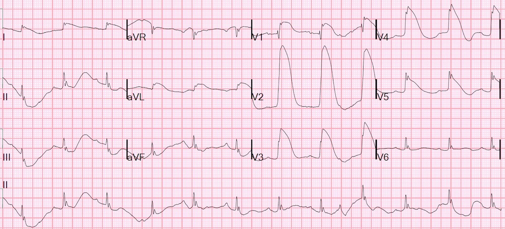
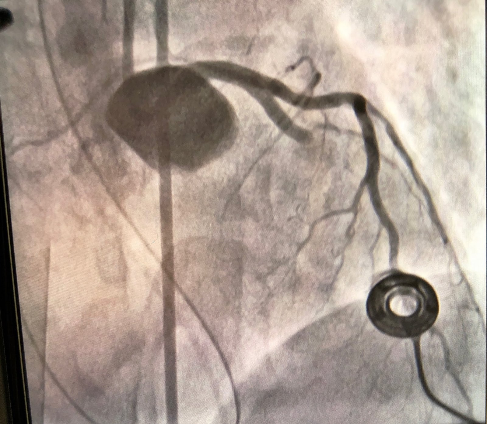
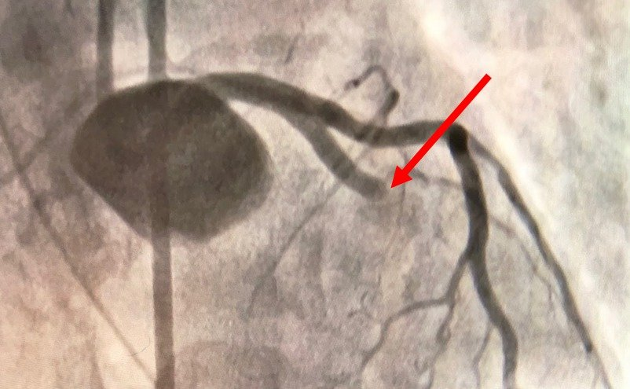
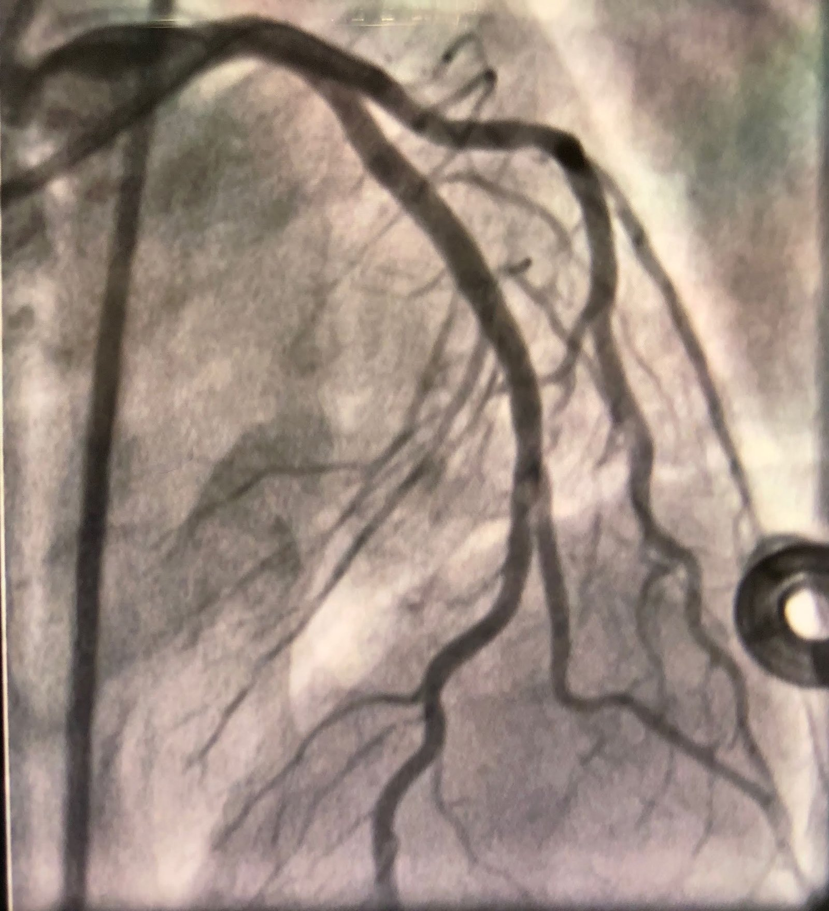
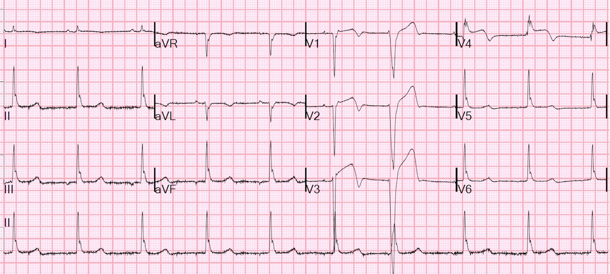
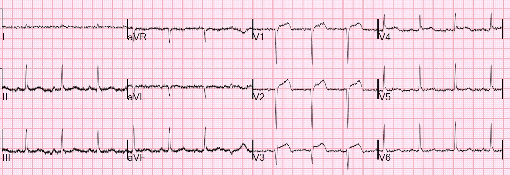
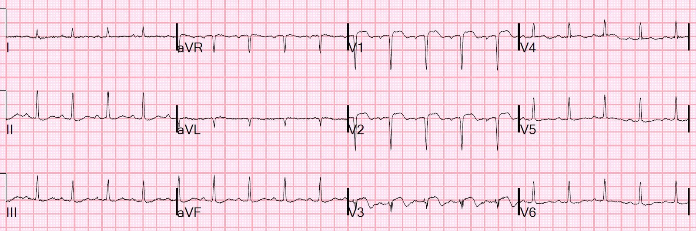
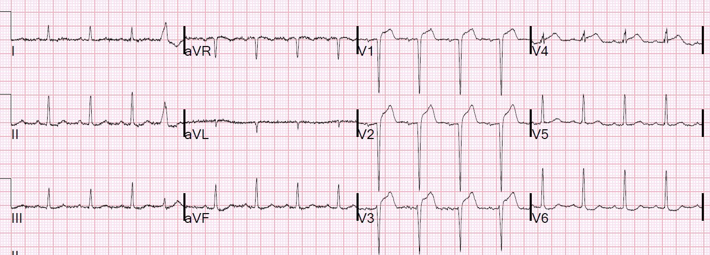
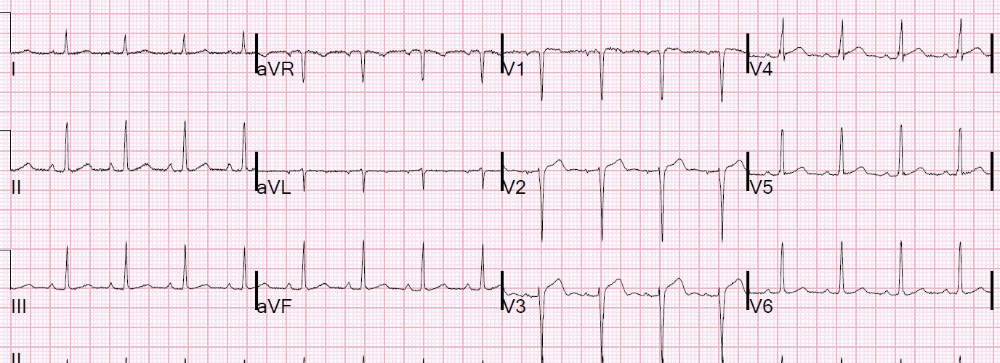
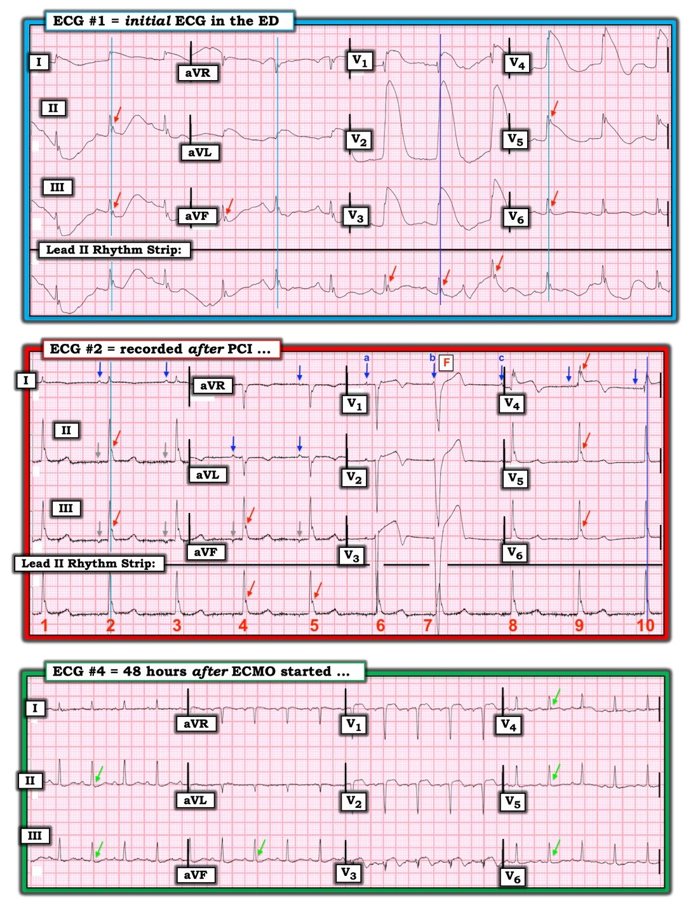

22/11/2019 — Rung thất dai dẳng, ECMO tại khoa cấp cứu, siêu âm tim qua thực quản tại khoa cấp cứu, ROSC, điện tâm đồ “vây cá mập” (còn gọi là “sóng R khổng lồ”), viêm màng ngoài tim khu trú sau nhồi máu. Một ca bệnh đáng nhớ!
Bản dịch tiếng Việt của bài "Persistent Ventricular Fibrillation, ED ECMO, ED TEE, ROSC, Shark Fin ECG (also called “Giant R-wave”), Postinfarction Regional Pericarditis. What a Case!" – Dr. Smith’s ECG Blog. Giữ nguyên toàn bộ 12 hình ảnh và 4 video của bản gốc.
Một bệnh nhân 40 mấy tuổi bị rung thất có người chứng kiến, được người xung quanh hồi sinh tim phổi, nhưng không thể khử rung thành công sau 4 lần thử.
Bệnh nhân được chuyển đến khoa cấp cứu (ED) và được đặt hỗ trợ sự sống ngoài cơ thể (ECLS, ECMO).
Một loạt siêu âm tim qua thực quản (TEE) tại khoa cấp cứu đã được thực hiện trong suốt 23 phút trước khi ghi được điện tâm đồ.
Trong những ca như thế này, chúng tôi thường không đạt được tái lập tuần hoàn tự nhiên (ROSC) trước khi chụp mạch vành, và việc ghi điện tâm đồ không quan trọng như thường lệ, vì theo phác đồ ECMO của chúng tôi, chúng tôi đưa tất cả các bệnh nhân này đến phòng thông tim (cath lab).
Đây là hình ảnh trước một lần thử khử rung khác, trong khi đang ép ngực:
Định hướng:
Đầu dò nằm trong thực quản, ngay sát nhĩ trái. vì vậy buồng ở phía trên cùng của hình là nhĩ trái. Ngay bên dưới đó là thất trái.
Đã khởi động thành công dòng chảy ECMO.
13 phút sau, bệnh nhân được khử rung thành công. Đây là hình ảnh TEE ngay sau đó:
Hoạt động có tổ chức rất ít, và có thể thấy dòng máu tốt trong buồng tim nhờ ECMO
Thêm 4 phút sau:
Có hoạt động có tổ chức, nhưng rất chậm và co bóp kém
Thêm 6 phút sau (TEE mặt cắt trục ngắn):
Co bóp và tần số tim đã tốt hơn
Một điện tâm đồ đã được ghi:


Có giá trị chẩn đoán tắc mạch vành. I và aVL có liên quan, nên đây là LAD đoạn gần.
Đây là thêm 2 ví dụ về hình ảnh vây cá mập (Shark Fin) trên blog này.
Bệnh nhân được đưa đi chụp mạch vành ngay:


Ở đây tôi chỉ ra chỗ tắc bằng một mũi tên đỏ:


Chỗ tắc được mở thông và đặt stent:


Một điện tâm đồ được ghi sau PCI:


Sự hồi phục của ST chênh lên là một dấu hiệu tái tưới máu rất đáng tin cậy.
Các nhát QRS hẹp có sóng T đảo ngược ở V1-V5 và aVL, cũng là dấu hiệu của tái tưới máu
Điện tâm đồ này được ghi vào sáng hôm sau:


Sẽ không có gì ngạc nhiên nếu cuối cùng bệnh nhân bị phình thất trái (ST chênh lên kéo dài sau nhồi máu cơ tim trước đó)
Lần đo troponin I cuối cùng là 107 ng/mL vào khoảng 12 giờ sau khi đến viện.
Trong y văn, hình thái này được gọi là:
“Vây cá mập” (Shark Fin). Xem kết quả tìm kiếm tại đây.
và cũng được gọi là:
“Sóng R khổng lồ” (Giant R-wave).
Điện tâm đồ này được ghi 48 giờ sau khi bắt đầu ECMO:


Siêu âm tim chính thức vào khoảng 24 giờ sau biến cố:
Thật đáng kinh ngạc, phân suất tống máu là 55%! (có rối loạn vận động thành vùng mỏm)
Ở thời điểm 72 giờ, bệnh nhân xuất hiện cảm giác đè nặng ngực. Bệnh nhân cũng bị giảm oxy máu kèm phù phổi. Điện tâm đồ này đã được ghi:


Vì vậy đã có lo ngại về huyết khối trong stent, và bệnh nhân được đưa đi chụp lại mạch vành, nhưng kết quả cho thấy các động mạch đều thông.
Điều gì có thể giải thích những dấu hiệu điện tâm đồ này? Một khả năng là viêm màng ngoài tim khu trú sau nhồi máu, được mô tả bên dưới.
Điện tâm đồ này được ghi vào ngày thứ 6:


Bệnh nhân tỉnh lại mà không có khiếm khuyết thần kinh.
Viêm màng ngoài tim khu trú sau nhồi máu (không được nhầm với hội chứng Dressler, vốn xảy ra muộn hơn)
Oliva và cs. (1) đã gắn kết chặt chẽ vỡ cơ tim với viêm màng ngoài tim khu trú sau nhồi máu (PIRP), và gắn PIRP với sóng T dương kéo dài.
Ông tìm thấy 2 kiểu tiến triển sóng T không điển hình trong PIRP:
1) sóng T dương (hướng lên) kéo dài ở thời điểm 48 giờ sau khởi phát nhồi máu cơ tim cấp (AMI), có giá trị chẩn đoán PIRP; và
2) sóng T đảo ngược chuyển sớm và từ từ thành sóng lệch dương (hướng lên) trong khoảng 48 đến 72 giờ sau khởi phát nhồi máu cơ tim, khi có các sóng QS hình thành rõ.
Các sóng Q rộng gợi ý nhồi máu cơ tim “xuyên thành” (nhồi máu cơ tim đã hoàn tất với ổ nhồi máu chiếm toàn bộ bề dày thành thất). Điều này thường gặp vào thời kỳ trước khi có tái tưới máu cho STEMI, nhưng vẫn xảy ra ở những bệnh nhân đến viện muộn và do đó không được điều trị tái tưới máu kịp thời, hoặc ở những bệnh nhân bị nhồi máu cơ tim rất nặng.
Khi nhồi máu cơ tim lan suốt tới lớp thượng tâm mạc (xuyên thành), vùng thượng tâm mạc bị nhồi máu đó thường bị viêm (viêm màng ngoài tim khu trú sau nhồi máu, hay PIRP). Ngoài ra, khi nhồi máu toàn bộ bề dày, đặc biệt khi có kèm viêm, cơ tim có nguy cơ bị “vỡ”. (2) Thuật ngữ “vỡ” nghe như một kiểu nổ tung hay một vụ toác lớn, nhưng thường đó chỉ là một chỗ rò nhỏ, chậm, mà theo thời gian có thể gây chèn ép tim và tử vong. Vỡ có thể là vỡ thành tự do (gây chèn ép tim) hoặc vỡ vách liên thất, gây thông liên thất với luồng thông trái sang phải, dẫn đến phù phổi và sốc.
Nếu được phát hiện sớm bằng siêu âm, bệnh nhân có thể được cứu sống. Dave Plummer của chính HCMC chúng tôi đã báo cáo 2 trên 6 bệnh nhân vỡ thành tự do cơ tim được chẩn đoán bằng siêu âm tại giường ở khoa cấp cứu đã sống sót.(3)
1. Oliva PB, Hammill SC, Edwards WD. Electrocardiographic diagnosis of postinfarction regional pericarditis: ancillary observations regarding the effect of reperfusion on the rapidity and amplitude of T wave inversion after acute myocardial infarction. Tạp chí Circulation 1993;88(3):896-904.
2. Oliva PB, Hammill SC, Edwards WD. Cardiac rupture, a clinically predictable complication of acute myocardial infarction: report of 70 cases with clinicopathologic correlations. Tạp chí J Am Coll Cardiol 1993;22(3):720-6
3. Plummer D, Dick C, Ruiz E, Clinton J, Brunette D. Emergency department two-dimensional echocardiography in the diagnosis of nontraumatic cardiac rupture. Tạp chí Ann Emerg Med 1994;23(6):1333-42.

===================================
BÌNH LUẬN CỦA TÔI, bởi KEN GRAUER, MD (22/11/2019):
===================================
Ca bệnh xuất sắc của Dr. Smith, trình bày chi tiết cách xử trí tuyệt vời mang lại việc cứu sống một cách kỳ diệu người đàn ông 40 mấy tuổi bị ngừng tim này. Các hình ảnh siêu âm tim và phim chụp mạch vành đã tự nói lên tất cả.
- Tôi giới hạn bình luận của mình ở một vài khái niệm đọc điện tâm đồ nâng cao mà tôi thấy rất thú vị. Không dấu hiệu điện tâm đồ nào trong số này làm thay đổi kết quả lâm sàng của ca này — nhưng chúng đáng được nhắc đến, vì việc nhận biết những dấu hiệu điện tâm đồ hấp dẫn này thực sự có thể hữu ích trong các ca khác.
- Để rõ ràng và để minh họa — tôi đã tái hiện và đánh dấu 3 trong số 6 bản ghi của ca này trong Hình 1.


Bình luận về điện tâm đồ #1 — Như Dr. Smith đã nêu, điện tâm đồ ban đầu trong ca này (điện tâm đồ #1) — biểu hiện một hình thái “vây cá mập” rất ấn tượng (Shark Fin) có giá trị chẩn đoán tắc cấp LAD đoạn gần.
- Hình thái vây cá mập (Shark Fin) đã được bàn luận nhiều lần trên Dr. Smith’s ECG Blog. Như Dr. Meyers đã viết (bài điện tâm đồ ngày 4 tháng Mười năm 2019) — “Khi QRS rộng, điểm J sẽ ẩn mình. Vì vậy, bước tiếp theo của bạn là Dò xuống, và Sao chép sang”.
- Làm theo chỉ dẫn của Dr. Meyers cho thấy phức bộ QRS thực ra hẹp đến mức nào trong điện tâm đồ #1. Tôi bắt đầu bằng cách xem các chuyển đạo V1,V2,V3 trong bản ghi này — vì tôi nghĩ R’ ở chuyển đạo V1, cùng với sự thay đổi độ dốc trong hình vây cá mập ấn tượng ở chuyển đạo V2 và V3, là mốc tốt để xác định điểm kết thúc phức bộ QRS (đường thẳng đứng màu XANH ĐẬM trong điện tâm đồ #1). Dò đường XANH ĐẬM này xuống tới phức bộ ở dải nhịp chuyển đạo II gợi ý cho tôi rằng “bướu” thêm vào ở bên phải đường XANH này (mũi tên ĐỎ) là một sóng Osborn!
- Việc “sao chép sang” điểm mà đường XANH ĐẬM dưới phức bộ thứ 2 ở các chuyển đạo V1,V2,V3 cắt tại điểm kết thúc QRS, sang 3 nhóm chuyển đạo ghi đồng thời còn lại — tạo ra các đường thẳng đứng màu XANH NHẠT trong điện tâm đồ #1. Với tôi, điều này gợi ý sự hiện diện của các sóng Osborn nổi bật ở nhiều chuyển đạo! (mũi tên ĐỎ).
SÓNG Osborn: Sóng Osborn được mô tả là một sóng lệch có dạng vòm hoặc bướu, xuất hiện tại điểm mà phần cuối phức bộ QRS nối với phần đầu đoạn ST. Đây là điểm J (tức là điểm nối (Join) phần cuối QRS với phần đầu đoạn ST) — vì vậy sóng Osborn là sóng điểm J phóng đại. Chúng còn được gọi là dấu hiệu “bướu lạc đà” (camel-hump).
- Sóng Osborn thường đi kèm nhất với hạ thân nhiệt đáng kể (thường không thấy cho đến khi nhiệt độ trung tâm dưới 90°F).
- ĐIỂM THEN CHỐT (PEARL) #1 — Điều quan trọng là cần nhận ra rằng các tình trạng khác cũng có thể đi kèm với sóng lệch điểm J nổi bật này. Sóng Osborn đã được báo cáo trong tăng calci máu, tổn thương não, xuất huyết dưới nhện, hội chứng Brugada, ngừng tim do rung thất (VFib) — và — thiếu máu cục bộ cấp nặng dẫn đến nhồi máu cơ tim cấp (như trong ca này! ). Sự xuất hiện sóng Osborn đi kèm thiếu máu cục bộ/nhồi máu cấp có thể là dấu hiệu báo trước rung thất sắp xảy ra.
Bình luận về điện tâm đồ #2 — Có một số khái niệm điện tâm đồ nâng cao liên quan đến điện tâm đồ #2.
- Nhịp này không phải nhịp xoang! Đó là vì không có sóng P dương ở chuyển đạo II. Thực tế, ở chuyển đạo II chỉ có nhiều nhất là một “chỗ lõm” âm cực nhỏ của sóng P (mũi tên XÁM).
- Lưu ý rằng sóng P thì dễ thấy hơn ở 2 chuyển đạo thành dưới còn lại (các mũi tên XÁM chỉ các sóng P lệch âm ở chuyển đạo III và aVF).
- Sóng P dương rõ ràng có thấy được ở chuyển đạo I và aVL (các mũi tên XANH ở các chuyển đạo này).
- Tất cả các sóng P kể trên đều được dẫn truyền — vì khoảng PR không đổi. Đây là khoảng PR bình thường (~0,16 giây).
- ĐIỂM THEN CHỐT (PEARL) #2 — Sự kết hợp giữa các sóng P được dẫn truyền với khoảng PR bình thường — với sóng P lệch đẳng pha hoặc âm ở các chuyển đạo thành dưới — và sóng P dương ở chuyển đạo I và aVL — gợi ý rằng thay vì nhịp bộ nối, có một nhịp nhĩ thấp (hoặc nhịp xoang vành) ở điện tâm đồ #2.
Việc nhận ra các sóng P rõ ràng trong điện tâm đồ #2 là quan trọng, giúp xác định nhát QRS rộng ( = nhát #7) ở chuyển đạo V1, V2 và V3 là gì.
- Tôi đã đánh dấu bằng các chữ cái a, b, c — 3 sóng P mà chúng ta thấy ở chuyển đạo V1 của điện tâm đồ #2 (các mũi tên XANH ở chuyển đạo này). Lưu ý rằng nhịp nhĩ thấp này vẫn đều trong suốt bản ghi (các sóng P a, b, c đều xuất hiện đúng lúc) — điều này cho chúng ta biết rằng sóng lệch dương nhỏ ban đầu ngay trước nhát QRS rộng (nhát #7) là phần đầu của một sóng P đúng lúc!
- Nhát #7 rõ ràng có nguồn gốc thất. Nhưng vì có một sóng P đúng lúc đi trước nó với khoảng PR ngắn hơn dự kiến — nhát #7 gần như chắc chắn là một nhát hỗn hợp (tức là có dẫn truyền chậm và một phần của sóng P được đánh dấu “b” — “hòa lẫn” với nhát thất).
- Tôi muốn phân biệt kỹ hơn loại “PVC” của nhát #7. Đúng, nó là “sớm” — vì nó xuất hiện hơi trước vị trí mà nhát xoang dẫn truyền bình thường tiếp theo sẽ xuất hiện. Nhưng đây là một PVC “muộn trong chu kỳ” (tức là cuối tâm trương) — điều này quan trọng, vì nó mang cùng ý nghĩa lâm sàng như nhịp AIVR (Accelerated IdioVentricular Rhythm — nhịp tự thất gia tốc) ở bệnh nhân nhồi máu cơ tim cấp — cụ thể là, nó là một dấu hiệu của tái tưới máu! Như Dr. Smith đã nêu — sự hồi phục của ST chênh lên + sóng T đảo ngược ở điện tâm đồ #2 là những dấu hiệu khác của tái tưới máu trong ca này. Như vậy = ĐIỂM THEN CHỐT (PEARL) #3 — Đôi khi sự khởi phát của hoặc AIVR và/hoặc PVC muộn trong chu kỳ có thể gợi ý rằng đã có tái tưới máu cấp trước khi bạn thấy ST chênh lên và sóng T đảo ngược hồi phục!
- Cuối cùng — Lưu ý rằng các sóng Osborn nổi bật vẫn còn hiện diện ở nhiều chuyển đạo trong điện tâm đồ #2 (mũi tên ĐỎ).
Bình luận về điện tâm đồ #4 — Tôi tin rằng điện tâm đồ #4 củng cố các nhận xét trước đó của tôi về việc phức bộ QRS thực ra hẹp đến mức nào trong điện tâm đồ #1 — cũng như việc các mũi tên ĐỎ trong các bản ghi trước thực sự biểu thị các sóng Osborn nổi bật.
- Dùng các đường thẳng đứng màu XANH nhạt hơn và đậm hơn trong điện tâm đồ #1 và 2 làm điểm kết thúc phức bộ QRS — có vẻ như hình thái QRS rất hẹp này vẫn nhất quán qua tất cả các bản ghi! Điều này củng cố rằng “bướu thêm vào” (mũi tên ĐỎ) thực sự là các sóng Osborn nổi bật — cuối cùng đã biến mất (mũi tên XANH LÁ nhạt) ở điện tâm đồ #4 khi bệnh nhân cải thiện.
Một lần nữa, chúng tôi xin CẢM ƠN Dr. Smith vì ca bệnh hấp dẫn với kết quả lâm sàng tích cực này!